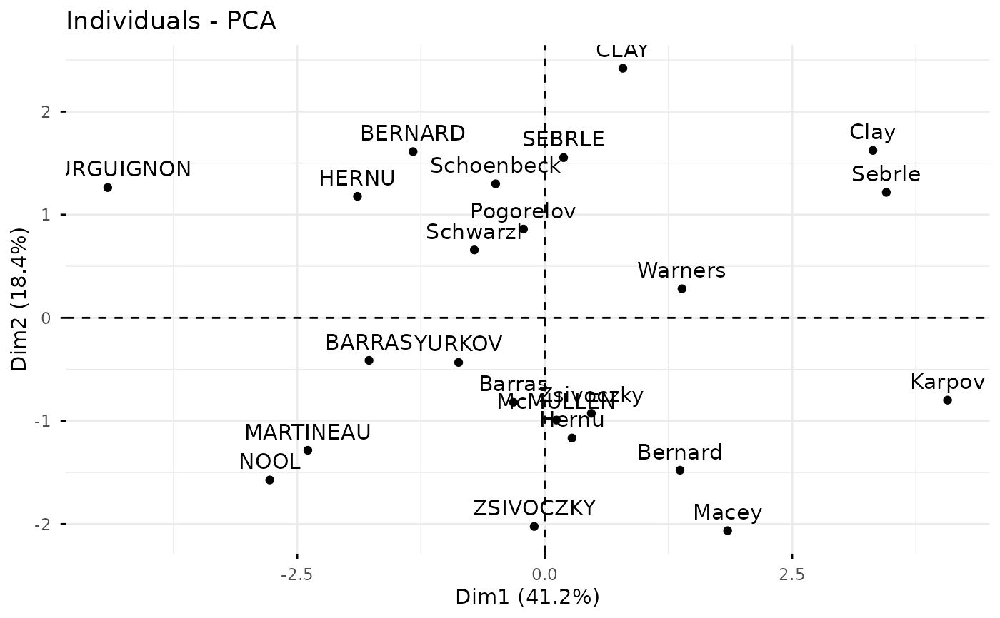
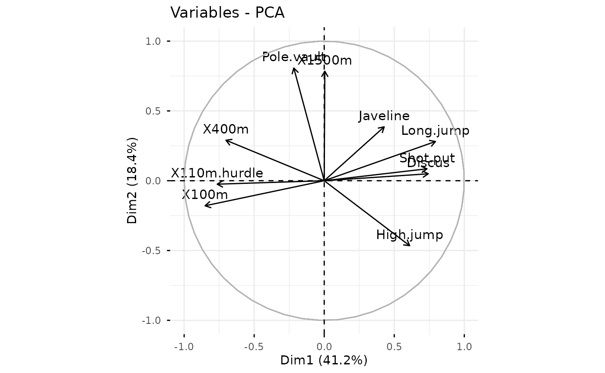
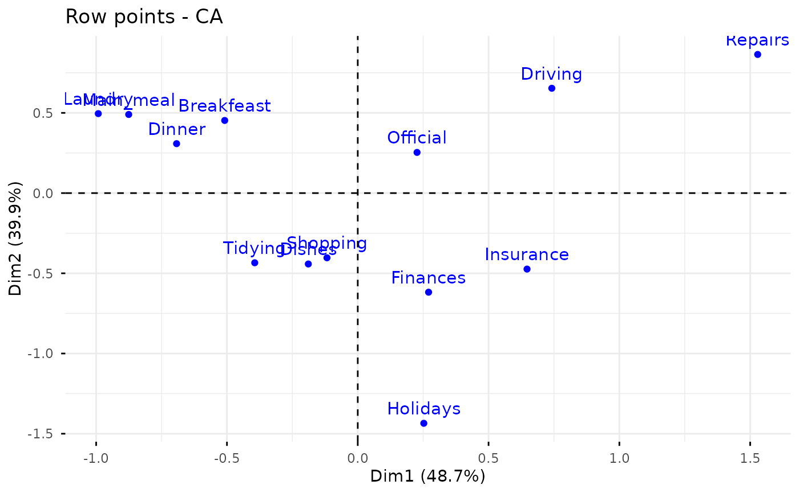
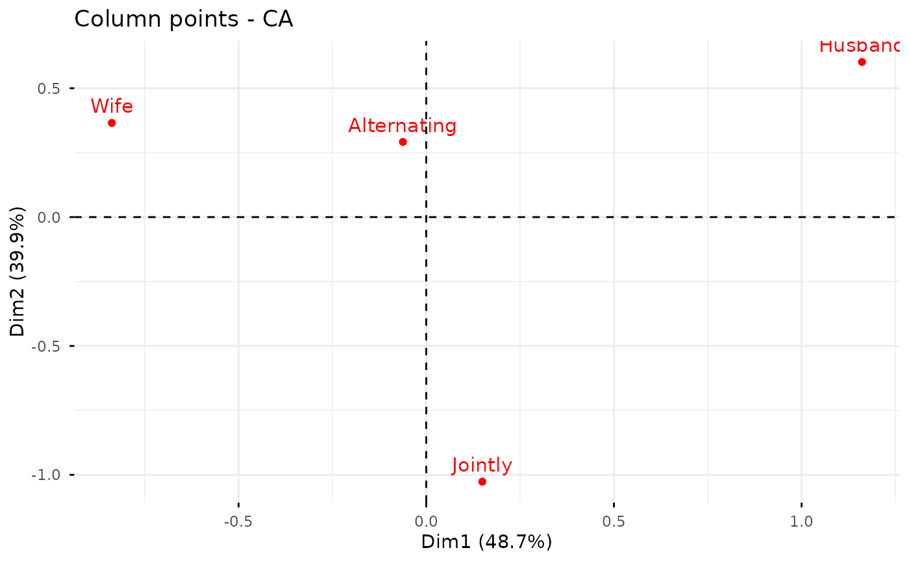
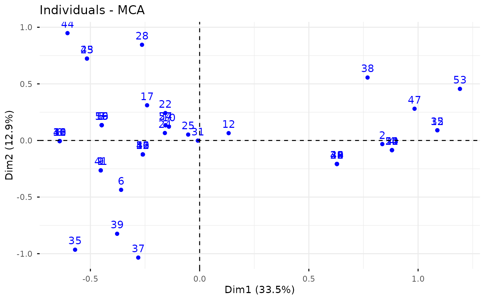
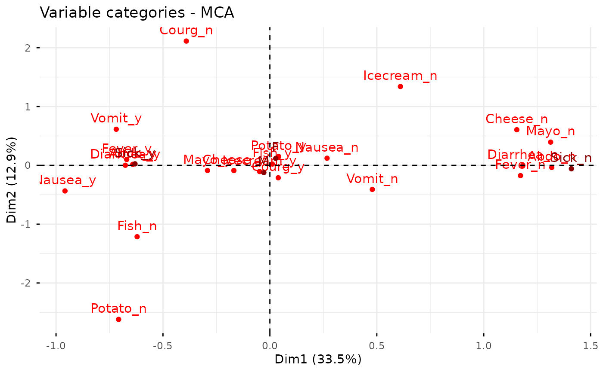

Generic function to create a scatter plot of multivariate analyse outputs, including PCA, CA, MCA and MFA.
Usage
fviz(
X,
element,
axes = c(1, 2),
geom = "auto",
label = "all",
invisible = "none",
labelsize = 4,
pointsize = 1.5,
pointshape = 19,
arrowsize = 0.5,
habillage = "none",
addEllipses = FALSE,
ellipse.level = 0.95,
ellipse.type = "norm",
ellipse.alpha = 0.1,
mean.point = TRUE,
color = "black",
fill = "white",
alpha = 1,
gradient.cols = NULL,
col.row.sup = "darkblue",
col.col.sup = "darkred",
select = list(name = NULL, cos2 = NULL, contrib = NULL),
title = NULL,
axes.linetype = "dashed",
repel = FALSE,
col.circle = "grey70",
circlesize = 0.5,
ggtheme = theme_minimal(),
ggp = NULL,
font.family = "",
...
)Arguments
- X
an object of class PCA, CA, MCA, FAMD, MFA and HMFA [FactoMineR]; prcomp and princomp [stats]; dudi, pca, coa and acm [ade4]; ca [ca package]; expoOutput [ExPosition].
- element
the element to subset from the output. Possible values are "row" or "col" for CA; "var" or "ind" for PCA and MCA; "mca.cor" for MCA; 'quanti.var', 'quali.var' , 'group' or 'ind' for FAMD, MFA and HMFA.
- axes
a numeric vector specifying the axes of interest. Default values are 1:2 for axes 1 and 2.
- geom
a text specifying the geometry to be used for the graph. Default value is "auto". Allowed values are the combination of c("point", "arrow", "text"). Use "point" (to show only points); "text" to show only labels; c("point", "text") or c("arrow", "text") to show both types.
- label
a text specifying the elements to be labelled. Default value is "all". Allowed values are "none" or the combination of c("ind", "ind.sup", "quali", "var", "quanti.sup", "group.sup"). "ind" can be used to label only active individuals. "ind.sup" is for supplementary individuals. "quali" is for supplementary qualitative variables. "var" is for active variables. "quanti.sup" is for quantitative supplementary variables.
- invisible
a text specifying the elements to be hidden on the plot. Default value is "none". Allowed values are the combination of c("ind", "ind.sup", "quali", "var", "quanti.sup", "group.sup").
- labelsize
font size for the labels
- pointsize
the size of points
- pointshape
the shape of points
- arrowsize
the size of arrows. Controls the thickness of arrows.
- habillage
an optional factor variable for coloring the observations by groups. Default value is "none". If X is a PCA object from FactoMineR package, habillage can also specify the supplementary qualitative variable (by its index or name) to be used for coloring individuals by groups (see ?PCA in FactoMineR).
- addEllipses
logical value. If TRUE, draws ellipses around the individuals when habillage != "none".
- ellipse.level
the size of the concentration ellipse in normal probability.
- ellipse.type
Character specifying frame type. Possible values are
"convex","confidence"or types supported bystat_ellipse()including one ofc("t", "norm", "euclid")for plotting concentration ellipses."convex": plot convex hull of a set of points."confidence": plot confidence ellipses around group mean points ascoord.ellipse()[in FactoMineR]."t": assumes a multivariate t-distribution."norm": assumes a multivariate normal distribution."euclid": draws a circle with the radius equal to level, representing the euclidean distance from the center. This ellipse probably won't appear circular unlesscoord_fixed()is applied.
- ellipse.alpha
Alpha for ellipse specifying the transparency level of fill color. Use alpha = 0 for no fill color.
- mean.point
logical value. If TRUE (default), group mean points are added to the plot.
- color
color to be used for the specified geometries (point, text). Can be a continuous variable or a factor variable. Possible values include also : "cos2", "contrib", "coord", "x" or "y". In this case, the colors for individuals/variables are automatically controlled by their qualities of representation ("cos2"), contributions ("contrib"), coordinates (x^2+y^2, "coord"), x values ("x") or y values ("y"). To use automatic coloring (by cos2, contrib, ....), make sure that habillage ="none".
- fill
same as the argument
color, but for point fill color. Useful when pointshape = 21, for example.- alpha
controls the transparency of individual and variable colors, respectively. The value can variate from 0 (total transparency) to 1 (no transparency). Default value is 1. Possible values include also : "cos2", "contrib", "coord", "x" or "y". In this case, the transparency for the individual/variable colors are automatically controlled by their qualities ("cos2"), contributions ("contrib"), coordinates (x^2+y^2, "coord"), x values("x") or y values("y"). To use this, make sure that habillage ="none".
- gradient.cols
vector of colors to use for n-colour gradient. Allowed values include brewer and ggsci color palettes.
- col.col.sup, col.row.sup
colors for the supplementary column and row points, respectively.
- select
a selection of individuals/variables to be drawn. Allowed values are NULL or a list containing the arguments name, cos2 or contrib:
name: is a character vector containing individuals/variables to be drawn
cos2: if cos2 is in [0, 1], ex: 0.6, then individuals/variables with a cos2 > 0.6 are drawn. if cos2 > 1, ex: 5, then the top 5 individuals/variables with the highest cos2 are drawn.
contrib: if contrib > 1, ex: 5, then the top 5 individuals/variables with the highest contrib are drawn
- title
the title of the graph
- axes.linetype
linetype of x and y axes.
- repel
a boolean, whether to use ggrepel to avoid overplotting text labels or not. The old
jitterargument is kept for backward compatibility and is silently converted torepel = TRUE.- col.circle
a color for the correlation circle. Used only when X is a PCA output.
- circlesize
the size of the variable correlation circle.
- ggtheme
function, ggplot2 theme name. Default value is theme_pubr(). Allowed values include ggplot2 official themes: theme_gray(), theme_bw(), theme_minimal(), theme_classic(), theme_void(), ....
- ggp
a ggplot. If not NULL, points are added to an existing plot.
- font.family
character vector specifying font family.
- ...
Arguments to be passed to the functions ggpubrplus::ggscatter() & ggpubrplus::ggpar().
Author
Alboukadel Kassambara alboukadel.kassambara@gmail.com
Examples
# \donttest{
# Principal component analysis
# +++++++++++++++++++++++++++++
data(decathlon2)
decathlon2.active <- decathlon2[1:23, 1:10]
res.pca <- prcomp(decathlon2.active, scale = TRUE)
fviz(res.pca, "ind") # Individuals plot

fviz(res.pca, "var") # Variables plot

# Correspondence Analysis
# ++++++++++++++++++++++++++
# Install and load FactoMineR to compute CA
# install.packages("FactoMineR")
library("FactoMineR")
data("housetasks")
res.ca <- CA(housetasks, graph = FALSE)
fviz(res.ca, "row") # Rows plot

fviz(res.ca, "col") # Columns plot

# Multiple Correspondence Analysis
# +++++++++++++++++++++++++++++++++
library(FactoMineR)
data(poison)
res.mca <- MCA(poison, quanti.sup = 1:2,
quali.sup = 3:4, graph=FALSE)
fviz(res.mca, "ind") # Individuals plot

fviz(res.mca, "var") # Variables plot

# }